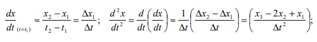
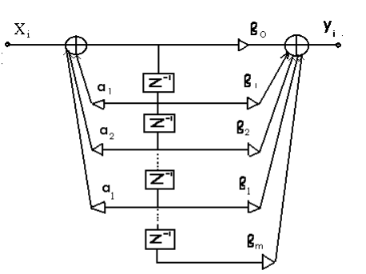

Цифровой фильтр - это микроЭВМ, которая решает задачу фильтрации средствами вычислительной техники.
Достоинства ЦФ:
- высокая температурная и временная стабильность характеристик;
- высокая точность копирования характеристик ЦФ при серийном
производстве аппаратуры;
- простота изменения параметров и характеристик ЦФ путём изменения
коэффициентов разностного уравнения и частоты дискретизации.
Недостатки ЦФ:
- относительная сложность и высокая стоимость реализации;
- необходимость применения микросхем с высоким быстродействием (на 1-2
порядка выше, чем при аналоговой обработке);
- выходной сигнал поражен шумом квантования.
3.1.Разностное уравнение ЦФ.
ЦФ описывается разностным уравнением, которое представляет собой цифровой
эквивалент аналогового дифференциального уравнения. Если в аналоговом
дифференциальном уравнении заменить производные их приближенным
выражением через отношение приращения функции х(t) к приращению аргумента
t:


Назад